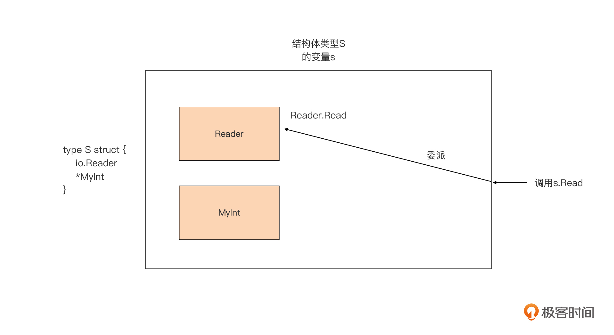

- 00 开篇词 这样入门Go，才能少走弯路.md.html
- 01 前世今生：你不得不了解的Go的历史和现状.md.html
- 02 拒绝“Hello and Bye”：Go语言的设计哲学是怎么一回事？.md.html
- 03 配好环境：选择一种最适合你的Go安装方法.md.html
- 04 初窥门径：一个Go程序的结构是怎样的？.md.html
- 05 标准先行：Go项目的布局标准是什么？.md.html
- 06 构建模式：Go是怎么解决包依赖管理问题的？.md.html
- 07 构建模式：Go Module的6类常规操作.md.html
- 08 入口函数与包初始化：搞清Go程序的执行次序.md.html
- 09 即学即练：构建一个Web服务就是这么简单.md.html
- 10 变量声明：静态语言有别于动态语言的重要特征.md.html
- 11 代码块与作用域：如何保证变量不会被遮蔽？.md.html
- 12 基本数据类型：Go原生支持的数值类型有哪些？.md.html
- 13 基本数据类型：为什么Go要原生支持字符串类型？.md.html
- 14 常量：Go在“常量”设计上的创新有哪些？.md.html
- 15 同构复合类型：从定长数组到变长切片.md.html
- 16 复合数据类型：原生map类型的实现机制是怎样的？.md.html
- 17 复合数据类型：用结构体建立对真实世界的抽象.md.html
- 18 控制结构：if的“快乐路径”原则.md.html
- 19 控制结构：Go的for循环，仅此一种.md.html
- 20 控制结构：Go中的switch语句有哪些变化？.md.html
- 21 函数：请叫我“一等公民”.md.html
- 22 函数：怎么结合多返回值进行错误处理？.md.html
- 23 函数：怎么让函数更简洁健壮？.md.html
- 24 方法：理解“方法”的本质.md.html
- 25 方法：方法集合与如何选择receiver类型？.md.html
- 26 方法：如何用类型嵌入模拟实现“继承”？.md.html
- 27 即学即练：跟踪函数调用链，理解代码更直观.md.html
- 28 接口：接口即契约.md.html
- 29 接口：为什么nil接口不等于nil？.md.html
- 30 接口：Go中最强大的魔法.md.html
- 31 并发：Go的并发方案实现方案是怎样的？.md.html
- 32 并发：聊聊Goroutine调度器的原理.md.html
- 33 并发：小channel中蕴含大智慧.md.html
- 34 并发：如何使用共享变量？.md.html
- 35 即学即练：如何实现一个轻量级线程池？.md.html
- 36 打稳根基：怎么实现一个TCP服务器？（上）.md.html
- 37 代码操练：怎么实现一个TCP服务器？（中）.md.html
- 38 成果优化：怎么实现一个TCP服务器？（下）.md.html
- 39 驯服泛型：了解类型参数.md.html
- 40 驯服泛型：定义泛型约束.md.html
- 41 驯服泛型：明确使用时机.md.html
- 元旦快乐 这是一份暂时停更的声明.md.html
- 加餐 作为Go Module的作者，你应该知道的几件事.md.html
- 加餐 如何拉取私有的Go Module？.md.html
- 加餐 我“私藏”的那些优质且权威的Go语言学习资料.md.html
- 加餐 聊聊Go 1.17版本的那些新特性.md.html
- 加餐 聊聊Go语言的指针.md.html
- 加餐 聊聊最近大热的Go泛型.md.html
- 大咖助阵 叶剑峰：Go语言中常用的那些代码优化点.md.html
- 大咖助阵 大明：Go泛型，泛了，但没有完全泛.md.html
- 大咖助阵 孔令飞：从小白到“老鸟”，我的Go语言进阶之路.md.html
- 大咖助阵 徐祥曦：从销售到分布式存储工程师，我与 Go 的故事.md.html
- 大咖助阵 曹春晖：聊聊 Go 语言的 GC 实现.md.html
- 大咖助阵 海纳：聊聊语言中的类型系统与泛型.md.html
- 期中测试 一起检验下你的学习成果吧.md.html
- 用户故事 罗杰：我的Go语言学习之路.md.html
- 结束语 和你一起迎接Go的黄金十年.md.html
- 结课测试 快来检验下你的学习成果吧！.md.html
- 捐赠
26 方法：如何用类型嵌入模拟实现“继承”？
你好，我是Tony Bai。
在前面的两节课中，我们学习了Go方法的声明、本质，以及receiver类型选择的三个原则。可以说，学完这些内容，我们就基本上解决了独立的自定义类型的方法的设计问题。
什么是独立的自定义类型呢？就是这个类型的所有方法都是自己显式实现的。我们举个例子，自定义类型T有两个方法M1和M2，如果T是一个独立的自定义类型，那我们在声明类型T的Go包源码文件中一定可以找到其所有方法的实现代码，比如：
func (T) M1() {...}
func (T) M2() {...}
这里你一定会问：难道还有某种自定义类型的方法不是自己显式实现的吗？当然有！这就是我们这讲中要重点讲解的内容：如何让某个自定义类型“继承”其他类型的方法实现。
这里你肯定又会提出质疑：老师，你不是说过Go不支持经典的面向对象编程范式吗？怎么还会有继承这一说法呢？没错！Go语言从设计伊始，就决定不支持经典面向对象的编程范式与语法元素，所以我们这里只是借用了“继承”这个词汇而已，说是“继承”，实则依旧是一种组合的思想。
而这种“继承”，我们是通过Go语言的类型嵌入（Type Embedding）来实现的。所以这一节课，我们就来学习一下这种语法，看看通过这种语法，我们如何实现对嵌入类型的方法的“继承”，同时也搞清楚这种方式对新定义的类型的方法集合的影响。
现在，我们先来学习一下什么是类型嵌入。
什么是类型嵌入
类型嵌入指的就是在一个类型的定义中嵌入了其他类型。Go语言支持两种类型嵌入，分别是接口类型的类型嵌入和结构体类型的类型嵌入。
接口类型的类型嵌入
我们先用一个案例，直观地了解一下什么是接口类型的类型嵌入。虽然我们现在还没有系统学习接口类型，但在前面的讲解中，我们已经多次接触了接口类型。我们知道，接口类型声明了由一个方法集合代表的接口，比如下面接口类型E：
type E interface {
M1()
M2()
}
这个接口类型E的方法集合，包含两个方法，分别是M1和M2，它们组成了E这个接口类型所代表的接口。如果某个类型实现了方法M1和M2，我们就说这个类型实现了E所代表的接口。
此时，我们再定义另外一个接口类型I，它的方法集合中包含了三个方法M1、M2和M3，如下面代码：
type I interface {
M1()
M2()
M3()
}
我们看到接口类型I方法集合中的M1和M2，与接口类型E的方法集合中的方法完全相同。在这种情况下，我们可以用接口类型E替代上面接口类型I定义中M1和M2，如下面代码：
type I interface {
E
M3()
}
像这种在一个接口类型（I）定义中，嵌入另外一个接口类型（E）的方式，就是我们说的接口类型的类型嵌入。
而且，这个带有类型嵌入的接口类型I的定义与上面那个包含M1、M2和M3的接口类型I的定义，是等价的。因此，我们可以得到一个结论，这种接口类型嵌入的语义就是新接口类型（如接口类型I）将嵌入的接口类型（如接口类型E）的方法集合，并入到自己的方法集合中。
到这里你可能会问，我在接口类型定义中平铺方法列表就好了，为啥要使用类型嵌入方式定义接口类型呢？其实这也是Go组合设计哲学的一种体现。
按Go语言惯例，Go中的接口类型中只包含少量方法，并且常常只是一个方法。通过在接口类型中嵌入其他接口类型可以实现接口的组合，这也是Go语言中基于已有接口类型构建新接口类型的惯用法。
我们在Go标准库中可以看到很多这种组合方式的应用，最常见的莫过于io包中一系列接口的定义了。比如，io包的ReadWriter、ReadWriteCloser等接口类型就是通过嵌入Reader、Writer或Closer三个基本的接口类型组合而成的。下面是仅包含单一方法的io包Reader、Writer和Closer的定义：
// $GOROOT/src/io/io.go
type Reader interface {
Read(p []byte) (n int, err error)
}
type Writer interface {
Write(p []byte) (n int, err error)
}
type Closer interface {
Close() error
}
下面的io包的ReadWriter、ReadWriteCloser等接口类型，通过嵌入上面基本接口类型组合而形成：
type ReadWriter interface {
Reader
Writer
}
type ReadCloser interface {
Reader
Closer
}
type WriteCloser interface {
Writer
Closer
}
type ReadWriteCloser interface {
Reader
Writer
Closer
}
不过，这种通过嵌入其他接口类型来创建新接口类型的方式，在Go 1.14版本之前是有约束的：如果新接口类型嵌入了多个接口类型，这些嵌入的接口类型的方法集合不能有交集，同时嵌入的接口类型的方法集合中的方法名字，也不能与新接口中的其他方法同名。比如我们用Go 1.12.7版本运行下面例子，Go编译器就会报错：
type Interface1 interface {
M1()
}
type Interface2 interface {
M1()
M2()
}
type Interface3 interface {
Interface1
Interface2 // Error: duplicate method M1
}
type Interface4 interface {
Interface2
M2() // Error: duplicate method M2
}
func main() {
}
我们具体看一下例子中的两个编译报错：第一个是因为Interface3中嵌入的两个接口类型Interface1和Interface2的方法集合有交集，交集是方法M1；第二个报错是因为Interface4类型中的方法M2与嵌入的接口类型Interface2的方法M2重名。
但自Go 1.14版本开始，Go语言去除了这些约束，我们使用Go 1.17版本运行上面这个示例就不会得到编译错误了。
当然，接口类型的类型嵌入比较简单，我们只要把握好它的语义，也就是“方法集合并入”就可以了。结构体类型的类型嵌入就要更复杂一些了，接下来我们一起来学习一下。
结构体类型的类型嵌入
我们在第17讲中对Go结构体类型进行了系统的讲解，在那一讲中我们遇到的结构体都是类似下面这样的：
type S struct {
A int
b string
c T
p *P
_ [10]int8
F func()
}
结构体类型S中的每个字段（field）都有唯一的名字与对应的类型，即便是使用空标识符占位的字段，它的类型也是明确的，但这还不是Go结构体类型的“完全体”。Go结构体类型定义还有另外一种形式，那就是带有嵌入字段（Embedded Field）的结构体定义。我们看下面这个例子：
type T1 int
type t2 struct{
n int
m int
}
type I interface {
M1()
}
type S1 struct {
T1
*t2
I
a int
b string
}
我们看到，结构体S1定义中有三个“非常规形式”的标识符，分别是T1、t2和I，这三个标识符究竟代表的是什么呢？是字段名还是字段的类型呢？这里我直接告诉你答案：它们既代表字段的名字，也代表字段的类型。我们分别以这三个标识符为例，说明一下它们的具体含义：
- 标识符T1表示字段名为T1，它的类型为自定义类型T1；
- 标识符t2表示字段名为t2，它的类型为自定义结构体类型t2的指针类型；
- 标识符I表示字段名为I，它的类型为接口类型I。
这种以某个类型名、类型的指针类型名或接口类型名，直接作为结构体字段的方式就叫做结构体的类型嵌入，这些字段也被叫做嵌入字段（Embedded Field）。
那么，嵌入字段怎么用呢？它跟普通结构体字段有啥不同呢？我们结合具体的例子，简单说一下嵌入字段的用法：
type MyInt int
func (n *MyInt) Add(m int) {
*n = *n + MyInt(m)
}
type t struct {
a int
b int
}
type S struct {
*MyInt
t
io.Reader
s string
n int
}
func main() {
m := MyInt(17)
r := strings.NewReader("hello, go")
s := S{
MyInt: &m,
t: t{
a: 1,
b: 2,
},
Reader: r,
s: "demo",
}
var sl = make([]byte, len("hello, go"))
s.Reader.Read(sl)
fmt.Println(string(sl)) // hello, go
s.MyInt.Add(5)
fmt.Println(*(s.MyInt)) // 22
}
在分析这段代码之前，我们要先明确一点，那就是嵌入字段的可见性与嵌入字段的类型的可见性是一致的。如果嵌入类型的名字是首字母大写的，那么也就说明这个嵌入字段是可导出的。
现在我们来看这个例子。
首先，这个例子中的结构体类型S使用了类型嵌入方式进行定义，它有三个嵌入字段MyInt、t和Reader。这里，你可能会问，为什么第三个嵌入字段的名字为Reader而不是io.Reader？这是因为，Go语言规定如果结构体使用从其他包导入的类型作为嵌入字段，比如pkg.T，那么这个嵌入字段的字段名就是T，代表的类型为pkg.T。
接下来，我们再来看结构体类型S的变量的初始化。我们使用field:value方式对S类型的变量s的各个字段进行初始化。和普通的字段一样，初始化嵌入字段时，我们可以直接用嵌入字段名作为field。
而且，通过变量s使用这些嵌入字段时，我们也可以像普通字段那样直接用变量s+字段选择符.+嵌入字段的名字，比如s.Reader。我们还可以通过这种方式调用嵌入字段的方法，比如s.Reader.Read和s.MyInt.Add。
这样看起来，嵌入字段的用法和普通字段没啥不同呀？也不完全是，Go还是对嵌入字段有一些约束的。比如，和Go方法的receiver的基类型一样，嵌入字段类型的底层类型不能为指针类型。而且，嵌入字段的名字在结构体定义也必须是唯一的，这也意味这如果两个类型的名字相同，它们无法同时作为嵌入字段放到同一个结构体定义中。不过，这些约束你了解一下就可以了，一旦违反，Go编译器会提示你的。
到这里，我们看到嵌入字段在使用上确实和普通字段没有多大差别，那我们为什么要用嵌入字段这种方式来定义结构体类型呢？别急，我们继续向下看。
“实现继承”的原理
我们将上面例子代码做一下细微改动，我这里只列了变化部分的代码：
var sl = make([]byte, len("hello, go"))
s.Read(sl)
fmt.Println(string(sl))
s.Add(5)
fmt.Println(*(s.MyInt))
看到这段代码，你肯定会问：老师，类型S也没有定义Read方法和Add方法啊，这样写会导致Go编译器报错的。如果你有这个疑问，可以暂停一下，先用你手头上的Go编译器编译运行一下这段代码看看。
惊不惊喜，意不意外？这段程序不但没有引发编译器报错，还可以正常运行并输出与前面例子相同的结果！
这段代码似乎在告诉我们：Read方法与Add方法就是类型S方法集合中的方法。但是，这里类型S明明没有显式实现这两个方法呀，它是从哪里得到这两个方法的实现的呢？
其实，这两个方法就来自结构体类型S的两个嵌入字段Reader和MyInt。结构体类型S“继承”了Reader字段的方法Read的实现，也“继承”了*MyInt的Add方法的实现。注意，我这里的“继承”用了引号，说明这并不是真正的继承，它只是Go语言的一种“障眼法”。
这种“障眼法”的工作机制是这样的，当我们通过结构体类型S的变量s调用Read方法时，Go发现结构体类型S自身并没有定义Read方法，于是Go会查看S的嵌入字段对应的类型是否定义了Read方法。这个时候，Reader字段就被找了出来，之后s.Read的调用就被转换为s.Reader.Read调用。
这样一来，嵌入字段Reader的Read方法就被提升为S的方法，放入了类型S的方法集合。同理*MyInt的Add方法也被提升为S的方法而放入S的方法集合。从外部来看，这种嵌入字段的方法的提升就给了我们一种结构体类型S“继承”了io.Reader类型Read方法的实现，以及*MyInt类型Add方法的实现的错觉。
到这里，我们就清楚了，嵌入字段的使用的确可以帮我们在Go中实现方法的“继承”。
这节课开始我们就提过，类型嵌入这种看似“继承”的机制，实际上是一种组合的思想。更具体点，它是一种组合中的代理（delegate）模式，如下图所示：

我们看到，S只是一个代理（delegate），对外它提供了它可以代理的所有方法，如例子中的Read和Add方法。当外界发起对S的Read方法的调用后，S将该调用委派给它内部的Reader实例来实际执行Read方法。
当然，嵌入字段的类型不同，自定义结构体类型可以代理的方法就不同，那自定义结构体类型究竟可以代理哪些方法呢？换个角度说，嵌入字段对结构体的方法集合有哪些影响呢？下面我们就分情况来看看嵌入不同类型的结构体类型的方法集合中，都包含哪些方法。
类型嵌入与方法集合
在前面讲解接口类型的类型嵌入时，我们提到过接口类型的类型嵌入的本质，就是嵌入类型的方法集合并入到新接口类型的方法集合中，并且，接口类型只能嵌入接口类型。而结构体类型对嵌入类型的要求就比较宽泛了，可以是任意自定义类型或接口类型。
下面我们就分别看看，在这两种情况下，结构体类型的方法集合会有怎样的变化。我们依旧借助上一讲中的dumpMethodSet函数来输出各个类型的方法集合，这里，我就不在例子中重复列出dumpMethodSet的代码了。
结构体类型中嵌入接口类型
在结构体类型中嵌入接口类型后，结构体类型的方法集合会发生什么变化呢？我们通过下面这个例子来看一下：
type I interface {
M1()
M2()
}
type T struct {
I
}
func (T) M3() {}
func main() {
var t T
var p *T
dumpMethodSet(t)
dumpMethodSet(p)
}
运行这个示例，我们会得到以下结果：
main.T's method set:
- M1
- M2
- M3
*main.T's method set:
- M1
- M2
- M3
我们可以看到，原本结构体类型T只带有一个方法M3，但在嵌入接口类型I后，结构体类型T的方法集合中又并入了接口类型I的方法集合。并且，由于*T类型方法集合包括T类型的方法集合，因此无论是类型T还是类型*T，它们的方法集合都包含M1、M2和M3。于是我们可以得出一个结论：结构体类型的方法集合，包含嵌入的接口类型的方法集合。
不过有一种情况，你要注意一下，那就是当结构体嵌入的多个接口类型的方法集合存在交集时，你要小心编译器可能会出现的错误提示。
看到这里，有同学可能会问：老师，你不是说Go 1.14版本解决了嵌入接口类型的方法集合有交集的情况吗？没错，但那仅限于接口类型中嵌入接口类型，这里我们说的是在结构体类型中嵌入方法集合有交集的接口类型。
这是什么意思呢？根据我们前面讲的，嵌入了其他类型的结构体类型本身是一个代理，在调用其实例所代理的方法时，Go会首先查看结构体自身是否实现了该方法。
如果实现了，Go就会优先使用结构体自己实现的方法。如果没有实现，那么Go就会查找结构体中的嵌入字段的方法集合中，是否包含了这个方法。如果多个嵌入字段的方法集合中都包含这个方法，那么我们就说方法集合存在交集。这个时候，Go编译器就会因无法确定究竟使用哪个方法而报错，下面的这个例子就演示了这种情况：
type E1 interface {
M1()
M2()
M3()
}
type E2 interface {
M1()
M2()
M4()
}
type T struct {
E1
E2
}
func main() {
t := T{}
t.M1()
t.M2()
}
运行这个例子，我们会得到：
main.go:22:3: ambiguous selector t.M1
main.go:23:3: ambiguous selector t.M2
我们看到，Go编译器给出了错误提示，表示在调用t.M1和t.M2时，编译器都出现了分歧。在这个例子中，结构体类型T嵌入的两个接口类型E1和E2的方法集合存在交集，都包含M1和M2，而结构体类型T自身呢，又没有实现M1和M2，所以编译器会因无法做出选择而报错。
那怎么解决这个问题呢？其实有两种解决方案。一是，我们可以消除E1和E2方法集合存在交集的情况。二是为T增加M1和M2方法的实现，这样的话，编译器便会直接选择T自己实现的M1和M2，不会陷入两难境地。比如，下面的例子演示的就是T增加了M1和M2方法实现的情况：
... ...
type T struct {
E1
E2
}
func (T) M1() { println("T's M1") }
func (T) M2() { println("T's M2") }
func main() {
t := T{}
t.M1() // T's M1
t.M2() // T's M2
}
结构体类型嵌入接口类型在日常编码中有一个妙用，就是可以简化单元测试的编写。由于嵌入某接口类型的结构体类型的方法集合包含了这个接口类型的方法集合，这就意味着，这个结构体类型也是它嵌入的接口类型的一个实现。即便结构体类型自身并没有实现这个接口类型的任意一个方法，也没有关系。我们来看一个直观的例子：
package employee
type Result struct {
Count int
}
func (r Result) Int() int { return r.Count }
type Rows []struct{}
type Stmt interface {
Close() error
NumInput() int
Exec(stmt string, args ...string) (Result, error)
Query(args []string) (Rows, error)
}
// 返回男性员工总数
func MaleCount(s Stmt) (int, error) {
result, err := s.Exec("select count(*) from employee_tab where gender=?", "1")
if err != nil {
return 0, err
}
return result.Int(), nil
}
在这个例子中，我们有一个employee包，这个包中的方法MaleCount，通过传入的Stmt接口的实现从数据库获取男性员工的数量。
现在我们的任务是要对MaleCount方法编写单元测试代码。对于这种依赖外部数据库操作的方法，我们的惯例是使用“伪对象（fake object）”来冒充真实的Stmt接口实现。
不过现在有一个问题，那就是Stmt接口类型的方法集合中有四个方法，而MaleCount函数只使用了Stmt接口的一个方法Exec。如果我们针对每个测试用例所用的伪对象都实现这四个方法，那么这个工作量有些大。
那么这个时候，我们怎样快速建立伪对象呢？结构体类型嵌入接口类型便可以帮助我们，下面是我们的解决方案：
package employee
import "testing"
type fakeStmtForMaleCount struct {
Stmt
}
func (fakeStmtForMaleCount) Exec(stmt string, args ...string) (Result, error) {
return Result{Count: 5}, nil
}
func TestEmployeeMaleCount(t *testing.T) {
f := fakeStmtForMaleCount{}
c, _ := MaleCount(f)
if c != 5 {
t.Errorf("want: %d, actual: %d", 5, c)
return
}
}
我们为TestEmployeeMaleCount测试用例建立了一个fakeStmtForMaleCount的伪对象类型，然后在这个类型中嵌入了Stmt接口类型。这样fakeStmtForMaleCount就实现了Stmt接口，我们也实现了快速建立伪对象的目的。接下来我们只需要为fakeStmtForMaleCount实现MaleCount所需的Exec方法，就可以满足这个测试的要求了。
那说完了在结构体中嵌入接口类型的情况后，我们再来看在结构体中嵌入结构体类型会对方法集合产生什么影响。
结构体类型中嵌入结构体类型
我们前面已经学过，在结构体类型中嵌入结构体类型，为Gopher们提供了一种“实现继承”的手段，外部的结构体类型T可以“继承”嵌入的结构体类型的所有方法的实现。并且，无论是T类型的变量实例还是*T类型变量实例，都可以调用所有“继承”的方法。但这种情况下，带有嵌入类型的新类型究竟“继承”了哪些方法，我们还要通过下面这个具体的示例来看一下。
type T1 struct{}
func (T1) T1M1() { println("T1's M1") }
func (*T1) PT1M2() { println("PT1's M2") }
type T2 struct{}
func (T2) T2M1() { println("T2's M1") }
func (*T2) PT2M2() { println("PT2's M2") }
type T struct {
T1
*T2
}
func main() {
t := T{
T1: T1{},
T2: &T2{},
}
dumpMethodSet(t)
dumpMethodSet(&t)
}
在这个例子中，结构体类型T有两个嵌入字段，分别是T1和*T2，根据上一讲中我们对结构体的方法集合的讲解，我们知道T1与*T1、T2与*T2的方法集合是不同的：
- T1的方法集合包含：T1M1；
- *T1的方法集合包含：T1M1、PT1M2；
- T2的方法集合包含：T2M1；
- *T2的方法集合包含：T2M1、PT2M2。
它们作为嵌入字段嵌入到T中后，对T和*T的方法集合的影响也是不同的。我们运行一下这个示例，看一下输出结果：
main.T's method set:
- PT2M2
- T1M1
- T2M1
*main.T's method set:
- PT1M2
- PT2M2
- T1M1
- T2M1
通过输出结果，我们看到了T和*T类型的方法集合果然有差别的：
- 类型T的方法集合 = T1的方法集合 + *T2的方法集合
- 类型*T的方法集合 = *T1的方法集合 + *T2的方法集合
这里，我们尤其要注意*T类型的方法集合，它包含的可不是T1类型的方法集合，而是*T1类型的方法集合。这和结构体指针类型的方法集合包含结构体类型方法集合，是一个道理。
讲到这里，基于类型嵌入“继承”方法实现的原理，我们基本都讲清楚了。但不知道你会不会还有一点疑惑：只有通过类型嵌入才能实现方法“继承”吗？如果我使用类型声明语法基于一个已有类型T定义一个新类型NT，那么NT是不是可以直接继承T的所有方法呢？
为了解答这个疑惑，我们继续来看看defined类型与alias类型是否可以实现方法集合的“继承”。
defined类型与alias类型的方法集合
Go语言中，凡通过类型声明语法声明的类型都被称为defined类型，下面是一些defined类型的声明的例子：
type I interface {
M1()
M2()
}
type T int
type NT T // 基于已存在的类型T创建新的defined类型NT
type NI I // 基于已存在的接口类型I创建新defined接口类型NI
新定义的defined类型与原defined类型是不同的类型，那么它们的方法集合上又会有什么关系呢？新类型是否“继承”原defined类型的方法集合呢？
这个问题，我们也要分情况来看。
对于那些基于接口类型创建的defined的接口类型，它们的方法集合与原接口类型的方法集合是一致的。但对于基于非接口类型的defined类型创建的非接口类型，我们通过下面例子来看一下：
package main
type T struct{}
func (T) M1() {}
func (*T) M2() {}
type T1 T
func main() {
var t T
var pt *T
var t1 T1
var pt1 *T1
dumpMethodSet(t)
dumpMethodSet(t1)
dumpMethodSet(pt)
dumpMethodSet(pt1)
}
在这个例子中，我们基于一个defined的非接口类型T创建了新defined类型T1，并且分别输出T1和*T1的方法集合来确认它们是否“继承”了T的方法集合。
运行这个示例程序，我们得到如下结果：
main.T's method set:
- M1
main.T1's method set is empty!
*main.T's method set:
- M1
- M2
*main.T1's method set is empty!
从输出结果上看，新类型T1并没有“继承”原defined类型T的任何一个方法。从逻辑上来说，这也符合T1与T是两个不同类型的语义。
基于自定义非接口类型的defined类型的方法集合为空的事实，也决定了即便原类型实现了某些接口，基于其创建的defined类型也没有“继承”这一隐式关联。也就是说，新defined类型要想实现那些接口，仍然需要重新实现接口的所有方法。
那么，基于类型别名（type alias）定义的新类型有没有“继承”原类型的方法集合呢？我们还是来看一个例子：
type T struct{}
func (T) M1() {}
func (*T) M2() {}
type T1 = T
func main() {
var t T
var pt *T
var t1 T1
var pt1 *T1
dumpMethodSet(t)
dumpMethodSet(t1)
dumpMethodSet(pt)
dumpMethodSet(pt1)
}
这个例子改自之前那个例子，我只是将T1的定义方式由类型声明改成了类型别名，我们看一下这个例子的输出结果：
main.T's method set:
- M1
main.T's method set:
- M1
*main.T's method set:
- M1
- M2
*main.T's method set:
- M1
- M2
通过这个输出结果，我们看到，我们的dumpMethodSet函数甚至都无法识别出“类型别名”，无论类型别名还是原类型，输出的都是原类型的方法集合。
由此我们可以得到一个结论：无论原类型是接口类型还是非接口类型，类型别名都与原类型拥有完全相同的方法集合。
小结
好了，今天的课讲到这里就结束了。这一节课中，我们主要学习了类型嵌入相关的知识，类型嵌入对类型方法集合的影响，也是我们日常进行方法设计时必须要考虑到的重要因素。
类型嵌入分为两种，一种是接口类型的类型嵌入，对于接口类型的类型嵌入我们只要把握好其语义“方法集合并入”就可以了。另外一种是结构体类型的类型嵌入。通过在结构体定义中的嵌入字段，我们可以实现对嵌入类型的方法集合的“继承”。
但这种“继承”并非经典面向对象范式中的那个继承，Go中的“继承”实际是一种组合，更具体点是组合思想下代理（delegate）模式的运用，也就是新类型代理了其嵌入类型的所有方法。当外界调用新类型的方法时，Go编译器会首先查找新类型是否实现了这个方法，如果没有，就会将调用委派给其内部实现了这个方法的嵌入类型的实例去执行，你一定要理解这个原理。
此外，你还要牢记类型嵌入对新类型的方法集合的影响，包括：
- 结构体类型的方法集合包含嵌入的接口类型的方法集合；
- 当结构体类型T包含嵌入字段E时，*T的方法集合不仅包含类型E的方法集合，还要包含类型*E的方法集合。
最后，基于非接口类型的defined类型创建的新defined类型不会继承原类型的方法集合，而通过类型别名定义的新类型则和原类型拥有相同的方法集合。
思考题
请你思考一下，下面带有类型嵌入的结构体S1与不带类型嵌入的结构体S2是否是等价的，如不等价，区别在哪里？
type T1 int
type t2 struct{
n int
m int
}
type I interface {
M1()
}
type S1 struct {
T1
*t2
I
a int
b string
}
type S2 struct {
T1 T1
t2 *t2
I I
a int
b string
}
欢迎把这节课分享给更多对Go类型嵌入感兴趣的朋友。我是Tony Bai，我们下节课见。
© 2019 - 2023 Liangliang Lee. Powered by gin and hexo-theme-book.